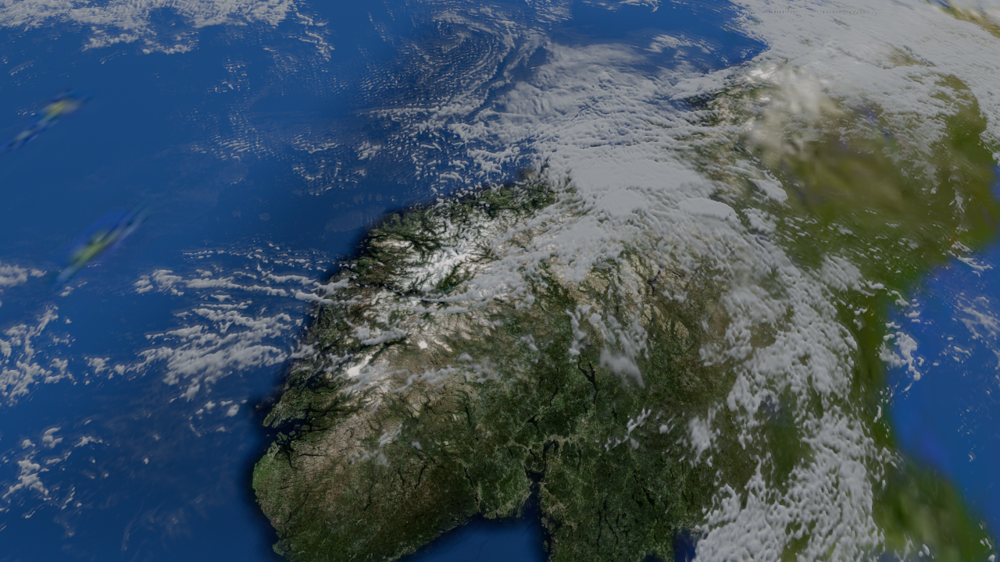
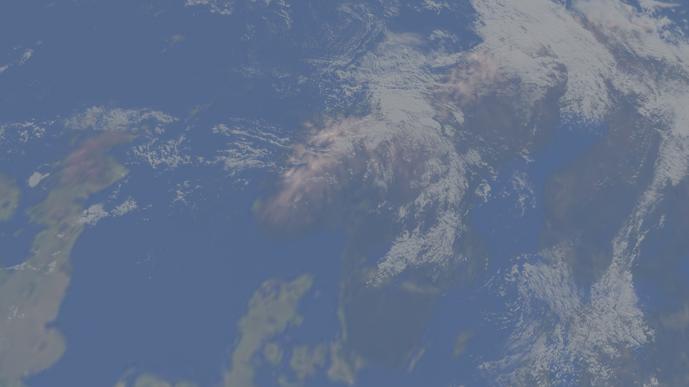
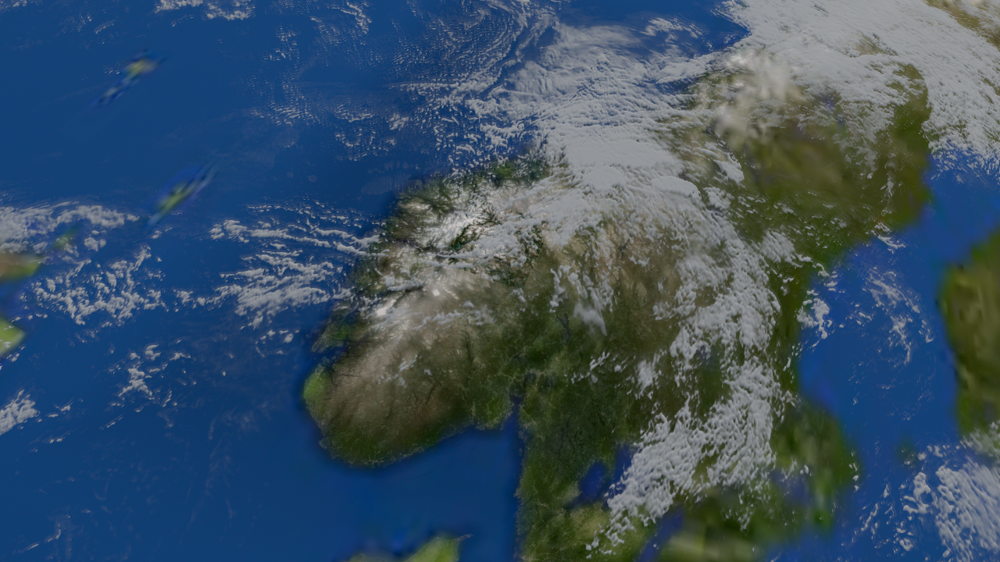
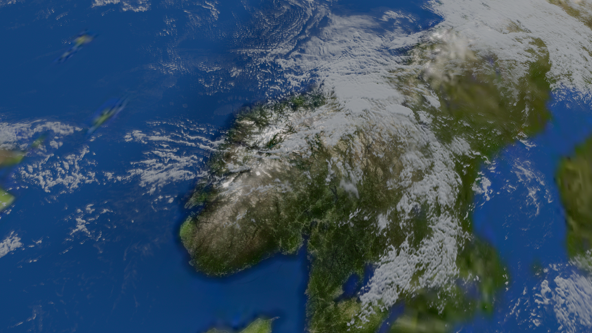
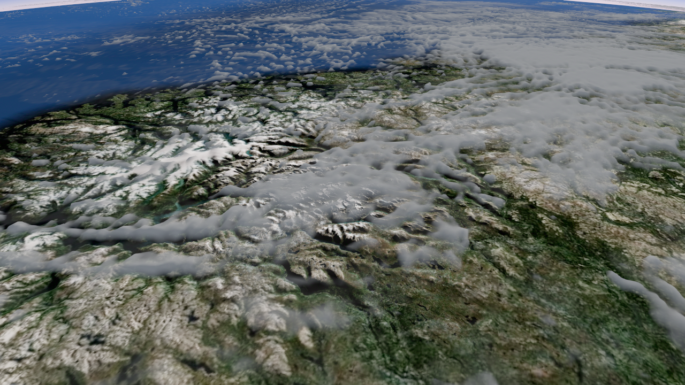
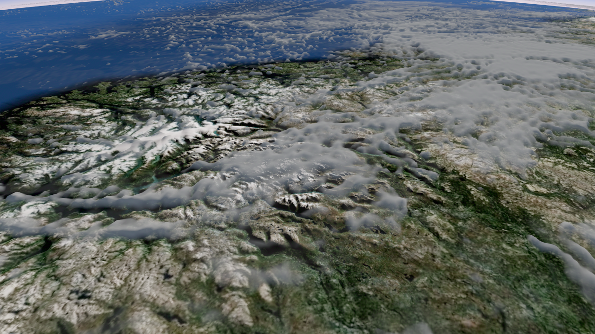

지도 디테일이 사라지는 인계 구간에 원본의 세부 결만 보존합니다. 전체 고해상도 색을 복원한 첫 후보는 어두운 사각형을 더 드러내 제외했습니다. 기존의 평균 색·밝기 인계와 지형 굴곡 전환은 유지합니다.
TUNE. 지도 세부 결 보존은 제한적인 보완이며 전체 사각 경계 해결은 아닙니다. 구름도 태양·높이·분포는 유지하며 채움광을 낮추고 직접광·그늘 대비만 바꿨습니다. 표면이 둥글고 매끈한 근사 형상의 한계는 남습니다.
실제 화면 · 지도 디테일 인계 / 구름 명암 · 검증 기록






자동 카메라 경로이며 사용자 휠/장시간 품질 증거는 아닙니다.